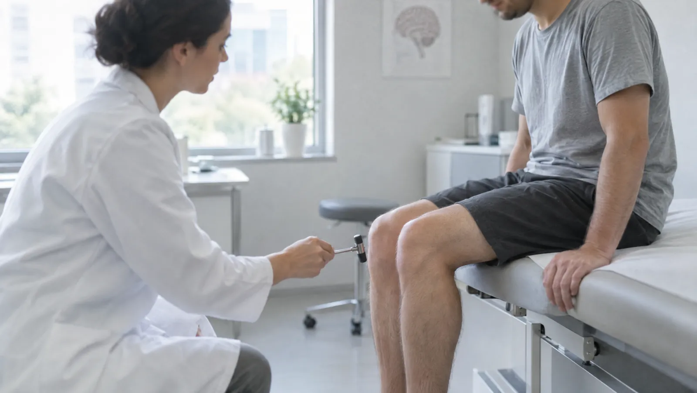

Nöroloji hangi sorunlara bakar?
Nöroloji; beyin, omurilik, çevresel sinirler ve kaslarla ilgili hastalıklara bakar. Sık görülen başvuru nedenleri baş ağrısı, baş dönmesi, el ve ayaklarda uyuşma, unutkanlık ve nöbettir. Nörolog bu şikâyetlerin kaynağını muayeneyle arar. Gerekirse kan tahlili ve görüntüleme ister. Tanı konduktan sonra ilaç ve kontrol planını sizinle birlikte yapar.
Nörolojik muayene birkaç basit testten oluşur. Hekim reflekslerinize, kas gücünüze ve dengenize bakar. Göz hareketlerinizi ve yürüyüşünüzü izler, dokunma duyunuzu kontrol eder. Bu bulgular, sorunun beyinden mi yoksa bir sinirden mi geldiğine dair ipucu verir. Böylece hangi tetkikin gerçekten gerektiğine birlikte karar verirsiniz. Muayene için özel bir hazırlık gerekmez.
Migren, epilepsi ve Parkinson gibi hastalıklar yıllarca takip ister. Bu yüzden kontrol randevuları en az ilk muayene kadar önemlidir. Örneğin düzenli tutulan bir baş ağrısı günlüğü, tedavinin işe yarayıp yaramadığını gösterir. Nöbet geçiren bir hastanın yakını, gördüklerini telefonla videoya alabilir. Bu kayıtlar, muayenede görülemeyen o anı hekime taşır.

Bu belirtiler nörolojik muayene gerektirebilir
- Sıklığı ya da şiddeti son dönemde değişen baş ağrısı
- Baş dönmesi, dengesizlik ya da sık düşme
- Ellerde, ayaklarda uyuşma, karıncalanma veya yanma
- Yakınlarınızın da fark ettiği unutkanlık artışı
- Bayılma, dalma ya da kasılma nöbetleri
- Ellerde titreme, hareketlerde yavaşlama
- Bel ya da boyundan kola, bacağa vuran ağrı
- Akşamları bacaklarda huzursuzluk ve kıpırdama isteği
Acil durumda beklemeyin
Yüzün bir yanında kayma, kol ya da bacakta ani güç kaybı, konuşmada bozulma veya ani görme kaybı inme belirtisi olabilir. Belirtilerin geçmesini beklemeyin, hemen 112'yi arayın. Aniden başlayan ve çok şiddetli baş ağrısında da aynı şekilde davranın. Belirtilerin başladığı saati not etmek tedavi kararında önemlidir.
Migrenden Parkinson'a izlenen hastalıklar
- Migren ve gerilim tipi baş ağrısı
- Epilepsi
- İnme sonrası takip
- Parkinson hastalığı
- Alzheimer ve diğer bunama türleri
- Multipl skleroz (MS)
- Karpal tünel sendromu
- Diyabete bağlı sinir hasarı (polinöropati)
- Yüz felci (Bell paralizisi)
- Huzursuz bacak sendromu
- Baş dönmesi ve denge bozuklukları
- Bel ve boyun fıtığına bağlı sinir sıkışması
Tanıya yardımcı testler
Nörolojik muayene
Refleks, kas gücü, denge, duyu ve göz hareketlerinin elle ve basit araçlarla değerlendirilmesi.
- Süre
- 20-30 dakika
- Hazırlık
- Rahat, kolay çıkarılan giysiler
EEG
Saçlı deriye yerleştirilen küçük elektrotlarla beynin elektriksel etkinliği kaydedilir. Nöbet ve bayılma şikâyetlerinin değerlendirilmesinde kullanılır.
- Süre
- Yaklaşık 30-40 dakika
- Hazırlık
- Saçınızı yıkayıp kurutun, jöle ya da yağ sürmeyin
EMG
Sinirlerin ileti hızı ve kasların elektriksel etkinliği ölçülür. Uyuşma ve güçsüzlüğün hangi sinirden kaynaklandığını gösterir.
- Süre
- 30-60 dakika
- Hazırlık
- Kollarınıza ve bacaklarınıza krem sürmeyin
Beyin tomografisi
Radyoloji biriminde çekilir. Kanamayı, eski inme izlerini ve kafa içinde yer kaplayan oluşumları göstermede kullanılır.
- Süre
- Birkaç dakika
- Hazırlık
- İlaçsız çekimde hazırlık gerekmez
Boyun damarları doppleri
Beyne kan taşıyan boyun damarlarında daralma olup olmadığına bakan ultrason incelemesi. İnme geçirmiş ya da risk taşıyan kişilerde istenir.
- Süre
- 15-20 dakika
- Hazırlık
- Hazırlık gerekmez
B12, tiroid ve şeker tahlilleri
Uyuşma, yorgunluk ve unutkanlığın düzeltilebilir bazı nedenlerini araştırır. Örnekler hastane laboratuvarında alınır.
- Hazırlık
- Şeker için 8-12 saat açlık
Belirtilerinizi anlatmayı kolaylaştıracak notlar
- Ağrı ya da nöbetlerin tarihini, saatini ve süresini bir deftere yazın
- Nöbet ya da titremeyi yakınınız videoya aldıysa telefonunuzda getirin
- Daha önceki tomografi ve EEG raporlarını, varsa görüntü CD'leriyle getirin
- Unutkanlık için geliyorsanız sizi iyi tanıyan bir yakınınızla birlikte gelin
- Kullandığınız tüm ilaçları ve bitkisel ürünleri listeleyin
Nöroloji hekimleri

Baş ağrısı, nöbet ve unutkanlık üzerine sorular
Her baş ağrısı için nöroloğa gitmek gerekir mi?
Gerekmez. Ara sıra olan ve ağrı kesiciyle geçen ağrılar çoğu zaman ciddi bir nedene bağlı değildir. Uykusuzluk ve stres de sık görülen tetikleyicilerdir. Öte yandan ağrının karakteri değiştiyse muayene gerekir. Sabahları kusmayla uyandıran ya da 50 yaşından sonra yeni başlayan ağrılar da öyle. Ayda on günden fazla ağrı kesici kullanıyorsanız bunu da konuşmak gerekir; çünkü sık alınan ağrı kesiciler baş ağrısını sürdürebilir.
EEG ya da EMG sırasında vücuda elektrik verilir mi?
EEG yalnız kayıt alır. Vücudunuza elektrik verilmez ve işlem sırasında bir şey hissetmezsiniz. EMG'de ise sinirleri uyarmak için kısa ve düşük şiddetli elektrik uyarıları kullanılır. Bu uyarılar hafif bir çarpılma hissi verir. Kas ölçümü için ince bir iğne de kullanılabilir. Çoğu kişi testi rahatsız edici ama katlanılabilir bulur.
Unutkanlığım yaşa mı bağlı, yoksa bir hastalığın belirtisi mi?
Bunu muayene ve testler olmadan ayırt etmek mümkün değildir. Yaşla birlikte isimleri geç hatırlamak sık görülür. Buna karşın yolu kaybetmek, aynı soruyu tekrar tekrar sormak ya da faturaları ödeyemez hâle gelmek muayene gerektirir. Hekim bellek testleri ve kan tahlilleriyle, tiroid ya da B12 eksikliği gibi düzeltilebilir nedenleri de araştırır.
Epilepsi ilacımın dozunu kendim azaltabilir miyim?
Hayır. Nöbet ilaçlarını birden kesmek ya da azaltmak, uzun süren ve tehlikeli nöbetlere yol açabilir. Doz değişikliğine nöroloğunuz karar verir; bu karar için EEG ve nöbet öykünüz birlikte değerlendirilir.
Bu sayfayı Uzm. Dr. Uğur Demirtaş gözden geçirdi. Son güncelleme: 7 Ekim 2026.